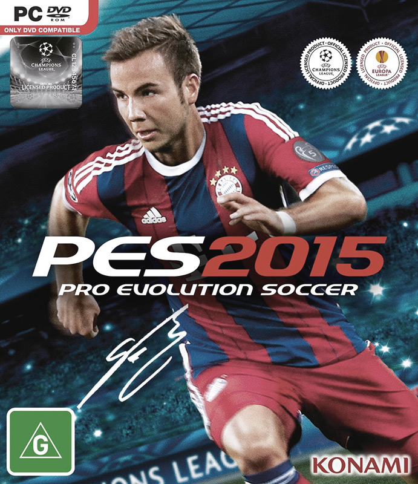
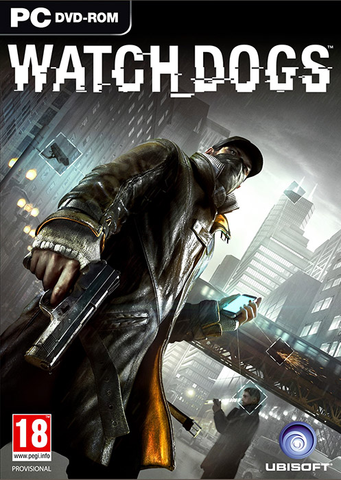
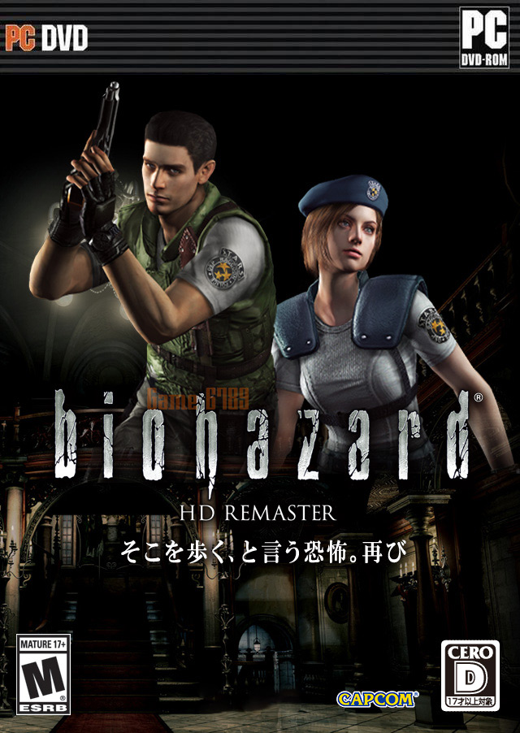

Pro Evolution Soccer 2015-RELOADED + LANGUAGE PACKS

PES 2015 elevates on-field realism with the aim of recreating the drama and tension associated with vital matches. PES 2015 marks a concerted return to core PES values of total control, utterly responsive controls and unrestricted gameplay, where the user has complete control over how they play. Evert pass, shot or run is finely balanced to give maximum player satisfaction within PES 2015’s on-field action.
WATCH DOGS-RELOADED

All it takes is the swipe of a finger. We connect with friends. We buy the latest gadgets and gear. We find out what’s happening in the world. But with that same simple swipe, we cast an increasingly expansive shadow.
RESIDENT EVIL HD REMASTER-CODEX

The game that defined the survival-horror genre is back! Check out the remastered HD version of Resident Evil.
In 1998 a special forces team is sent to investigate some bizarre murders on the outskirts of Raccoon City. Upon arriving they are attacked by a pack of blood-thirsty dogs and are forced to take cover in a nearby mansion. But the scent of death hangs heavy in the air. Supplies are scarce as they struggle to stay alive.
Go to top